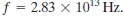

The frequency of vibration of loaded spring is

Here is the spring constant of the spring and
is the spring constant of the spring and is the mass of the body
is the mass of the body
Rewrite the equation for k.
Substitute for , and for
, and for .
.
Therefore, the frequency of spring constant is
Carbon dioxide is a linear molecule. The carbon–oxygen bonds in this molecule act very much like springs. Figure 11–58 shows one possible way the oxygen atoms in this molecule can oscillate: the oxygen atoms oscillate symmetrically in and out, while the central carbon atom remains at rest. Hence each oxygen atom acts like a simple harmonic oscillator with a mass equal to the mass of an oxygen atom. It is observed that this oscillation occurs at a frequency  What is the spring constant of the bond?
The frequency of vibration of loaded spring is
Here is the spring constant of the spring and is the mass of the body
Rewrite the equation for k.
Substitute for, and for.
Therefore, the frequency of spring constant is